Partial Engine Assembly (2GR-FE) Disassembly |
| 1. Remove Oil Filler Cap Sub-assembly |
Remove the oil filler cap from the cylinder head cover LH.
Remove the oil filler cap gasket from the oil filler cap.
| 2. Remove Spark Plug |
Remove the 6 spark plugs from each cylinder head.
| 3. Remove Oil Pan Drain Plug |
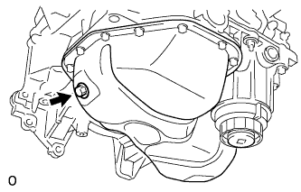 |
Remove the oil pan drain plug and gasket from oil pan No.2.
| 4. Remove Ventilation Valve Sub-assembly |
 |
Using a deep socket wrench (19mm), remove the ventilation valve from the cylinder head cover LH.
| 5. Remove Crank Position Sensor NO.2 |
 |
Remove the 4 bolts and 4 crank position sensors No.2 from each cylinder head cover.
| 6. Remove Camshaft Timing Oil Control Valve Assembly |
 |
Remove the 4 bolts, 4 camshaft timing oil control valve assemblies and 4 O-rings from each cylinder head cover.
| 7. Remove Crankshaft Position Sensor |
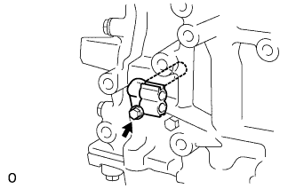 |
Remove the bolt and crank position sensor from the cylinder block.
| 8. Remove Oil Pipe NO.1 |
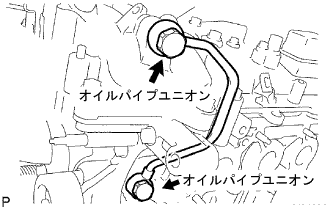 |
Remove the 2 oil pipe unions and oil pipe No.1.
Remove the oil control valve filter LH and 3 gaskets.
| 9. Remove Oil Pipe |
 |
Remove the bolt and 2 oil pipe unions, and remove the oil pipe.
Remove the oil control valve filter RH and 3 gaskets.
| 10. Remove Cylinder Block Water Drain Cock Sub-assembly |
Remove the 2 water drain cock plugs from the water drain cocks.
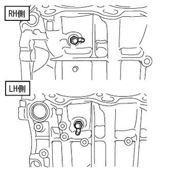 |
Using a deep socket wrench (14mm), remove the 2 water drain cocks from the cylinder block.
| 11. Remove Oil Filter Element |
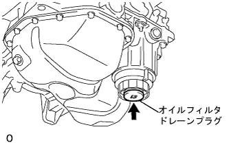 |
Remove the oil filter drain plug from the oil filter cap assembly.
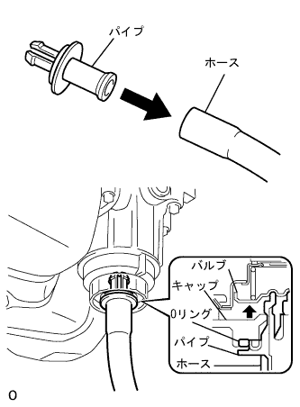 |
Connect a hose (15 φ) to the supplied pipe.
Insert the pipe with the hose attached into the oil filter cap assembly.
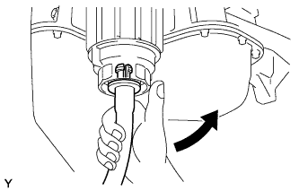 |
Check that the oil has drained, and remove the pipe and O-ring (for drain plug).
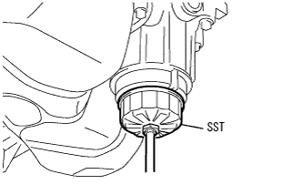 |
Using SST, remove the oil filter cap assembly.
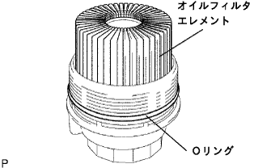 |
Remove the oil filter element and O-ring (for cap) from the oil filter cap.
| 12. Remove Crankshaft Pulley |
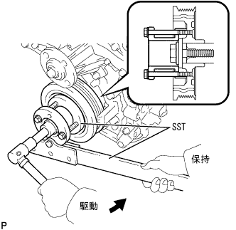 |
Using SST, hold the crankshaft pulley and loosen the bolt.
Screw the bolt 2-3 pitches into the crankshaft.
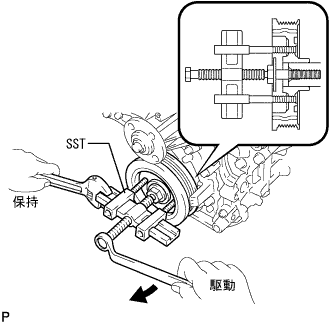 |
Using SST, remove the crankshaft pulley.
| 13. Remove Engine Mounting Bracket Front NO.1 LH |
 |
Remove the 6 bolts and engine mounting bracket front No.1 LH.
Remove the 3 stud bolts from engine mounting bracket front No.1 LH.
| 14. Remove Water Inlet |
 |
Remove the 2 nuts and water inlet from the water inlet housing.
Remove the thermostat and water inlet housing gasket No.2 from the water inlet housing.
| 15. Remove Water Inlet Housing |
Remove the clamp and disconnect water bypass hose No.1.
 |
Remove the drain cock from the water inlet housing.
Remove the 2 bolts and nut, and remove the water inlet housing.
Remove the 2 stud bolts from the water inlet housing.
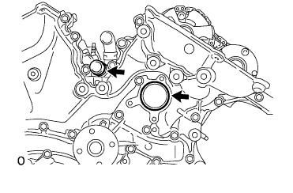 |
Remove water inlet housing gasket No.1 and the O-ring.
| 16. Remove Water Outlet |
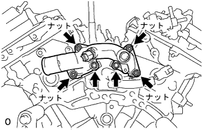 |
Remove the 2 bolts and 4 nuts, and remove the water outlet.
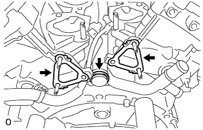 |
Remove the 2 water outlet gaskets and O-ring.
| 17. Remove Cylinder Head Cover Sub-assembly |
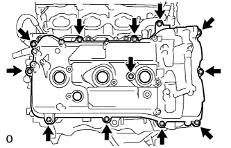 |
Remove the 12 bolts and seal washers, and remove the cylinder head cover.
Remove the cylinder head cover gasket from the cylinder head cover.
 |
Remove the 3 gaskets from camshaft bearing caps (No.1, No.2, No.7).
| 18. Remove Cylinder Head Cover Sub-assembly LH |
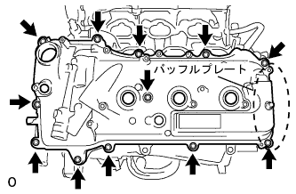 |
Remove the 12 bolts and seal washers, and remove the cylinder head cover LH.
Remove the cylinder head cover gasket LH from the cylinder head cover LH.
 |
Remove the 3 gaskets from camshaft bearing caps (No.3, No.4, No.7).
| 19. Remove Oil Pan Sub-assembly NO.2 |
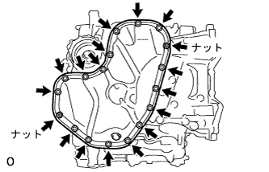 |
Remove the 16 bolts and 2 nuts.
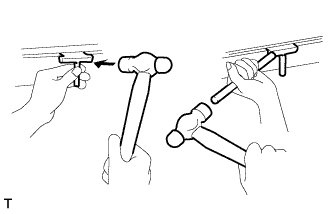 |
Using an oil pan seal cutter, remove oil pan No.2.
Using Torx socket wrench E6, remove the 2 stud bolts.
| 20. Remove Oil Strainer Sub-assembly |
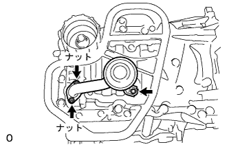 |
Remove the bolt and 2 nuts, and remove the oil strainer and oil strainer gasket.
Using Torx socket wrench E6, remove the 2 stud bolts.
| 21. Remove Oil Pan Sub-assembly |
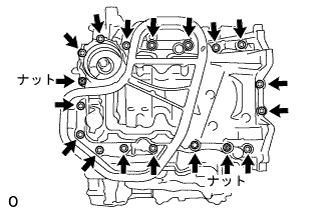 |
Remove the 16 bolts and 2 nuts.
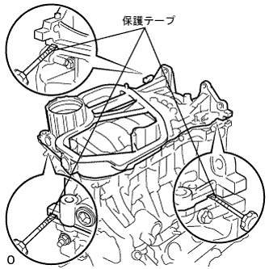 |
Using a screwdriver with its tip wrapped in protective tape, pry the portions shown in the illustration to remove the oil pan.
 |
Remove the 2 O-rings.
Using Torx socket wrench E8, remove the 2 stud bolts.
| 22. Remove Oil Pan Baffle Plate NO.1 |
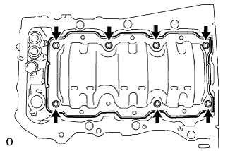 |
Remove the 7 bolts and oil pan baffle plate.
| 23. Remove Engine Rear Oil Seal Retainer |
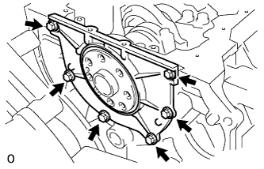 |
Remove the 6 bolts.
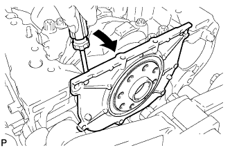 |
Using a screwdriver with its tip wrapped in protective tape, pry out the rear oil seal retainer.
| 24. Remove Engine Rear Oil Seal |
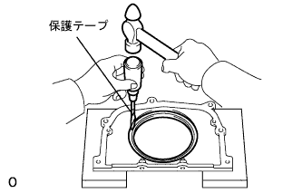 |
Using a screwdriver with its tip wrapped in protective tape, remove the engine rear oil seal.
| 25. Remove Water Pump Assembly |
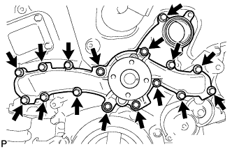 |
Remove the 16 bolts shown in the illustration, and remove the water pump and gasket.
| 26. Remove Timing Chain or Belt Cover Sub-assembly |
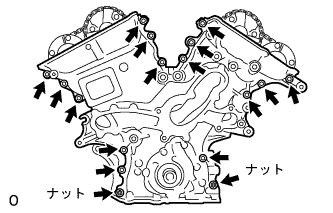 |
Remove the 15 bolts and 2 nuts shown in the illustration.
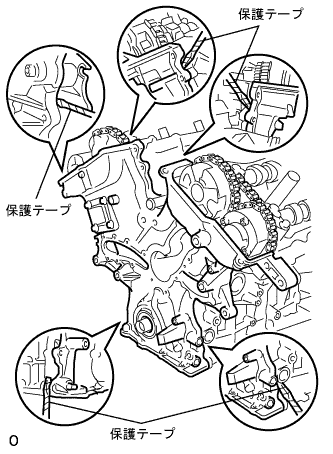 |
Using a screwdriver with its tip wrapped in protective tape, pry the portions shown in the illustration to remove the timing chain (belt) cover.
Remove the 4 bolts, timing chain cover plate and timing gear (chain) cover gasket from the timing chain (belt) cover.
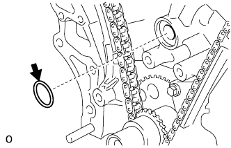 |
Remove the oil pump gasket from the cylinder block.
| 27. Remove Timing Gear Case or Timing Chain Case Oil Seal |
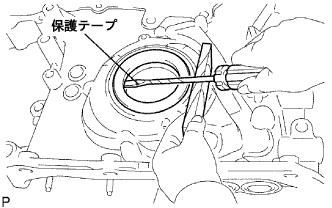 |
Using a screwdriver with its tip wrapped in protective tape, remove the timing gear case oil seal.
| 28. Set No. No.1 Cylinder to TDC/Compression |
Temporarily install the pulley bolt to the crankshaft.
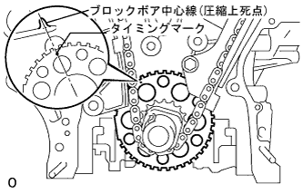 |
Align the timing mark of the crank angle sensor plate with the RH block bore center line (TDC/compression position).
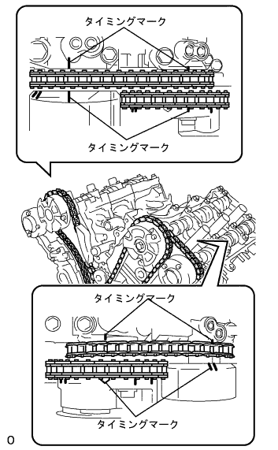 |
At this time, check that the timing marks of the camshaft timing gears are in the positions shown in the illustration.
| 29. Remove Chain Tensioner Assembly NO.1 |
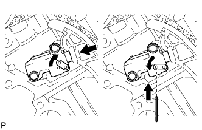 |
Move the stopper plate upward to release the lock, and push the plunger in completely.
Move the stopper plate downward to lock it, and insert a hexagon wrench into the hole of the stopper plate.
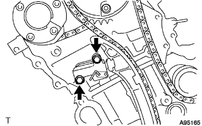 |
Remove the 2 bolts and tensioner assembly No.1 from the cylinder block.
| 30. Remove Chain Tensioner Slipper |
Remove the chain tensioner slipper.
| 31. Remove Chain Sub-assembly |
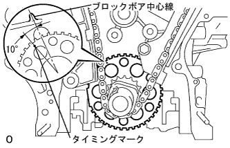 |
Turn the crankshaft counterclockwise 10° to loosen the chain on the crankshaft timing gear.
Remove the pulley bolt.
 |
Remove the chain from the crankshaft timing gear and place it on the crankshaft.
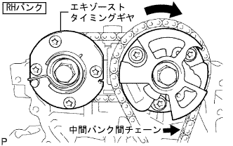 |
Turn the camshaft timing gear assembly on the RH bank clockwise (approximately 60°) and align the exhaust timing gear with the position shown in the illustration (to loosen the chain between the banks).
Remove the chain.
| 32. Remove Idle Sprocket Assembly |
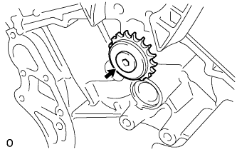 |
Using socket hexagon wrench 10, remove the idle sprocket assembly from the cylinder block.
Remove idle gear shaft No.1 from the idle sprocket assembly.
| 33. Remove Chain Vibration Damper NO.1 |
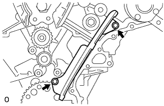 |
Remove the 2 bolts and remove the chain vibration damper No.1.
| 34. Remove Chain Vibration Damper NO.2 |
Remove the 2 chain vibration dampers No.2 from each cylinder head.
| 35. Remove Crankshaft Timing Gear or Sprocket |
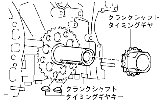 |
Remove the crankshaft timing gear from the crankshaft.
Using a screwdriver with its tip wrapped in protective tape, remove the 2 crankshaft timing gear keys from the crankshaft.
| 36. Remove Camshaft Timing Gear and ChainNO.2(RH Bank) |
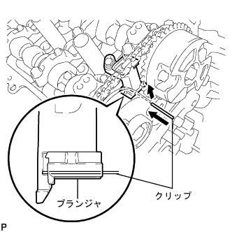 |
Push up chain tensioner No.2 and insert a clip into the plunger hole to lock it.
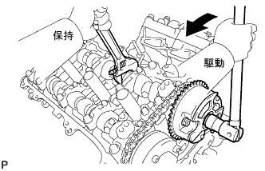 |
Using the service hexagon portion of the camshaft, loosen the installation bolts of the camshaft timing gear and camshaft timing exhaust gear assembly.
Remove the 2 bolts, and remove the camshaft timing gear assembly and camshaft exhaust timing gear assembly with chain No.2 installed.
Remove chain No.2 from the camshaft timing gear and camshaft exhaust timing gear assembly.
| 37. Remove Chain Tensioner Assembly NO.2 |
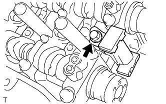 |
Remove the bolt and chain tensioner assembly No.2.
| 38. Remove Camshaft Bearing Cap |
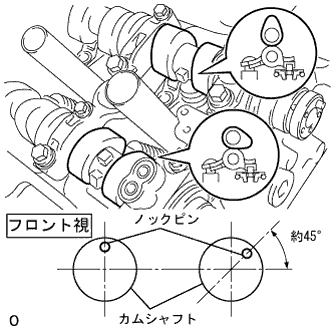 |
Check that the camshafts are in the positions shown in the illustration.
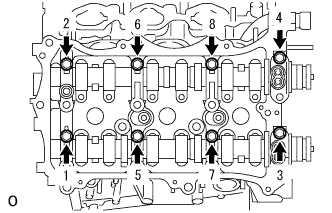 |
Uniformly loosen and remove the 8 bearing cap bolts in the sequence shown in the illustration.
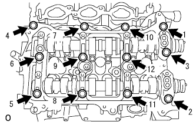 |
Uniformly loosen and remove the 8 bearing cap bolts and 4 camshaft housing RH installation bolts in the sequence shown in the illustration.
Remove the 5 camshaft bearing caps.
| 39. Remove Camshaft |
Remove the camshaft from the camshaft housing RH.
| 40. Remove Camshaft NO.2 |
Remove camshaft No.2 from the camshaft housing RH.
| 41. Remove Camshaft Housing Sub-assembly RH |
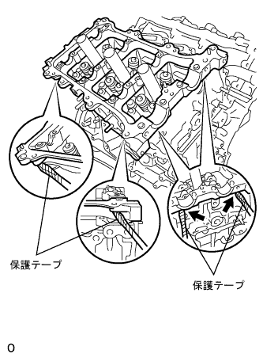 |
Using a screwdriver with its tip wrapped in protective tape, pry the portions shown in the illustration to remove the camshaft housing RH.
| 42. Remove Camshaft Timing Gear and ChainNO.2(LH Bank) |
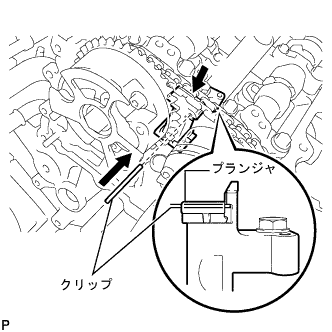 |
Push down chain tensioner assembly No.3 and insert a clip into the plunger hole to lock it.
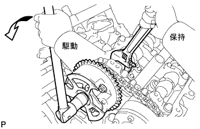 |
Using the service hexagon portion of the camshaft, loosen the installation bolts of the camshaft timing gear and camshaft timing exhaust gear assembly.
Remove the 2 bolts, and remove the camshaft timing gear assembly and camshaft exhaust timing gear assembly with chain No.2 installed.
Remove chain No.2 from the camshaft timing gear and camshaft exhaust timing gear assembly.
| 43. Remove Chain Tensioner Assembly NO.3 |
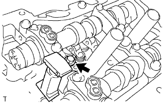 |
Remove the bolt and chain tensioner assembly No.3.
| 44. Remove Camshaft Bearing Cap |
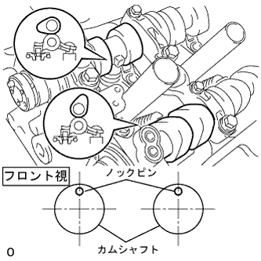 |
Check that the camshafts are in the positions shown in the illustration.
Uniformly loosen and remove the 8 bearing cap bolts in the sequence shown in the illustration.
Uniformly loosen and remove the 8 bearing cap bolts and 5 camshaft housing LH installation bolts in the sequence shown in the illustration.
Remove the 5 camshaft bearing caps.
| 45. Remove Camshaft Sub-assembly NO.3 |
Remove camshaft No.3 from the camshaft housing.
| 46. Remove Camshaft Sub-assembly NO.4 |
Remove camshaft No.4 from the camshaft housing.
| 47. Remove Camshaft Housing Sub-assembly LH |
Using a screwdriver with its tip wrapped in protective tape, pry the portions shown in the illustration to remove the camshaft housing LH.
| 48. Remove Valve Rocker Arm Sub-assembly NO.1 |
Remove the 24 valve rocker arms No.1.
| 49. Remove Valve Lash Adjuster Assembly |
Remove the 24 valve lash adjuster assemblies.
| 50. Remove Cylinder Head Sub-assembly |
Using a double hexagon wrench (10mm), uniformly loosen the cylinder head bolts in several passes in the sequence shown in the illustration, and remove the 8 cylinder head bolts and 8 washers.
Remove the cylinder head.
Remove the cylinder head gasket.
| 51. Remove Cylinder Head LH |
Remove the 2 bolts in the sequence shown in the illustration.
Using a double hexagon wrench (10mm), uniformly loosen the cylinder head bolts in several passes in the sequence shown in the illustration, and remove the 8 cylinder head bolts and 8 washers.
Remove the cylinder head LH.
Remove cylinder head gasket No.2.
| 52. Remove Water Inlet Pipe |
Remove the clamp and water bypass pipe No.1.
 |
Remove the 2 bolts and water inlet pipe from the cylinder block.
| 53. Inspect Valve Rocker Arm Sub-assembly NO.1 |
Turn the roller by hand and check that it turns smoothly.
| 54. Inspect Valve Lash Adjuster Assembly |
Place the lash adjuster in a container filled with engine oil. Using SST, push down the check ball and move the plunger up and down 5-6 times to check plunger operation and bleed the air.
After bleeding air, remove the SST and push the plunger hard and quickly with a finger.
| 55. Inspect Camshaft |
Runout Inspection
Support the front and rear journals on V-blocks and measure the camshaft runout at the center journal using a dial indicator.
)Inspect Cam Lobe Height
Using a micrometer, measure the cam lobe height.
| Measurement Point | Standard [mm] |
|---|---|
| Intake Side | 44.316-44.416 |
| Exhaust Side | 44.262-44.362 |
| Measurement Point | Maximum [mm] |
|---|---|
| Intake Side | 44.166 |
| Exhaust Side | 44.112 |
Inspect Camshaft Journal
Using a micrometer, measure the journal diameter.
| Measurement Point | Standard [mm] |
|---|---|
| No. No.1 Journal | 35.946-35.960 |
| Other than No. No.1 Journal | 25.959-25.975 |
)| 56. Inspect Camshaft Timing Gear Assembly |
Secure the hexagonal service portion of the camshaft in a vise, with aluminum plates in between.
Align the knock pin of the camshaft with the pin hole of the camshaft timing gear assembly, and install the camshaft timing gear assembly to the camshaft.
Apply a small amount of engine oil to the bolt threads and seat surfaces, and then tighten.
Inspect Lock Condition
After tightening, check that the camshaft timing gear assembly is locked.
Release Lock Pin
Cover the 4 oil holes in the cam journal with vinyl tape, etc. as shown in the illustration.
Make holes in the vinyl tape covering the 2 oil holes (advance oil hole, retard oil hole) on the opposite side.
To the 2 oil holes (advance oil hole, retard oil hole) where holes were made in the vinyl tape, 200kPa{2.0kgf/cm2apply air pressure of approximately }.
From the above condition, gradually reduce the air pressure on the retard oil hole side and check that the camshaft timing gear assembly rotates in the advance direction.
When the camshaft timing gear assembly reaches the most advanced position, release the air pressure on the retard oil hole side, and then release the air pressure on the advance oil hole side.
Check Movement
Move the camshaft timing gear assembly back and forth 2-3 times within the movable range [21°] excluding the most retarded position, and check that it moves smoothly.
Check Lock at Most Retarded Position
Check that the camshaft timing gear assembly locks and does not turn at the most retarded position (the most retarded end of the movable range).
Secure the hexagonal service portion of the camshaft in a vise, with aluminum plates in between.
Remove the flange bolt and remove the camshaft timing gear assembly.
| 57. Inspect Camshaft Timing Exhaust Gear Assembly |
Secure the hexagonal service portion of the camshaft in a vise, with aluminum plates in between.
Align the knock pin of the camshaft with the pin hole of the camshaft timing exhaust gear assembly, and install the camshaft timing exhaust gear assembly to the camshaft.
Apply a small amount of engine oil to the bolt threads and seat surfaces, and then tighten.
Inspect Lock Condition
After tightening, check that the camshaft timing exhaust gear assembly is locked.
Release Lock Pin
Cover the 4 oil holes in the cam journal with vinyl tape, etc. as shown in the illustration.
Make holes in the vinyl tape covering the 2 oil holes (advance oil hole, retard oil hole) on the opposite side.
To the 2 oil holes (advance oil hole, retard oil hole) where holes were made in the vinyl tape, 200kPa{2.0kgf/cm2apply air pressure of approximately }.
From the above condition, gradually reduce the air pressure on the advance oil hole side and check that the camshaft timing exhaust gear assembly rotates in the retard direction.
When the camshaft timing exhaust gear assembly reaches the most retarded position, release the air pressure on the advance oil hole side, and then release the air pressure on the retard oil hole side.
Check Movement
Move the camshaft timing exhaust gear assembly back and forth 2-3 times within the movable range [18.5°] excluding the most advanced position, and check that it moves smoothly.
Check Lock at Most Advanced Position
Check that the camshaft timing exhaust gear assembly locks and does not turn at the most advanced position (the most advanced end of the movable range).
Secure the hexagonal service portion of the camshaft in a vise, with aluminum plates in between.
Remove the flange bolt and camshaft timing exhaust gear assembly.
| 58. Inspect Cylinder Head Set Bolt |
Using vernier calipers, measure the outside diameter of the cylinder head bolt at approximately 103mm below the head.
| 59. Inspect Chain Sub-assembly |
Using a spring scale, measure the length of the timing chain when it is pulled with a force of 147N{15.0kgf}.
| 60. Inspect Chain Sub-assembly NO.2 |
Using a spring scale, measure the length of the timing chain when it is pulled with a force of 147N{15.0kgf}.
| 61. Inspect Crankshaft Timing Gear or Sprocket |
Wrap the chain around the crankshaft timing gear and measure the outside diameter.
| 62. Inspect Idle Sprocket Assembly |
Wrap the chain around the idle sprocket and measure the outside diameter.
| 63. Inspect Idle Gear Shaft Oil Clearance |
Using a micrometer, measure the outside diameter of idle gear shaft No.1.
Using a caliper gauge, measure the inside diameter of the idle gear sprocket.
Calculate the oil clearance from the inside diameter of the idle gear sprocket and the outside diameter of idle gear shaft No.1.
| 64. Inspect Chain Tensioner Assembly NO.1 |
Move the stopper plate of the tensioner upward to release the lock, and check that the plunger moves smoothly when pushed.
| 65. Inspect Chain Tensioner Assembly NO.2 |
Check that the plunger moves smoothly when pushed.
Using vernier calipers, measure dimension (A) at the position shown in the illustration.
| 66. Inspect Chain Tensioner Assembly NO.3 |
Check that the plunger moves smoothly when pushed.
Using vernier calipers, measure dimension (A) at the position shown in the illustration.
| 67. Inspect Chain Tensioner Slipper |
Using vernier calipers, measure dimension (A) at the position shown in the illustration.
| 68. Inspect Chain Vibration Damper NO.1 |
Using vernier calipers, measure dimension (A) at the position shown in the illustration.
| 69. Inspect Chain Vibration Damper NO.2 |
Using vernier calipers, measure dimension (A) at the position shown in the illustration.